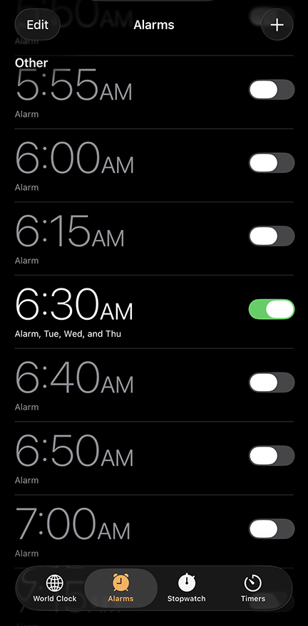
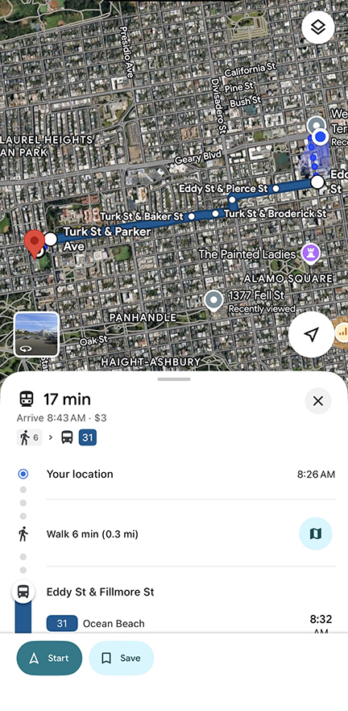
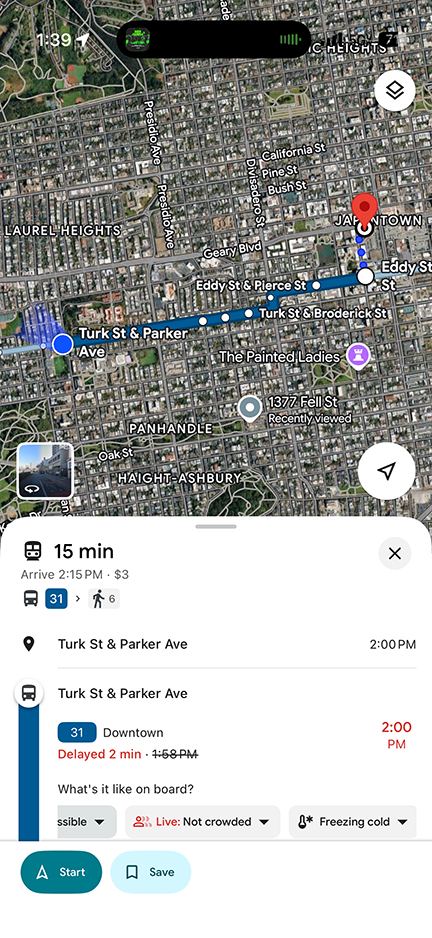
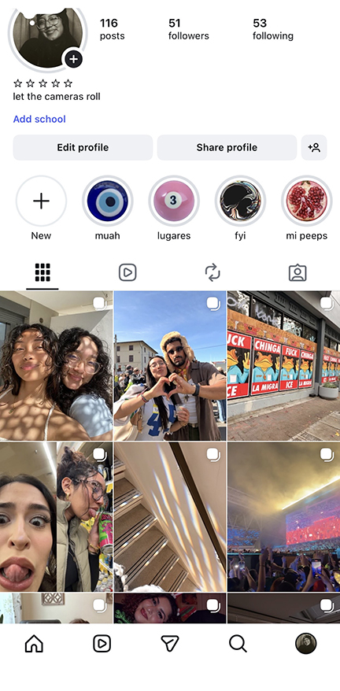
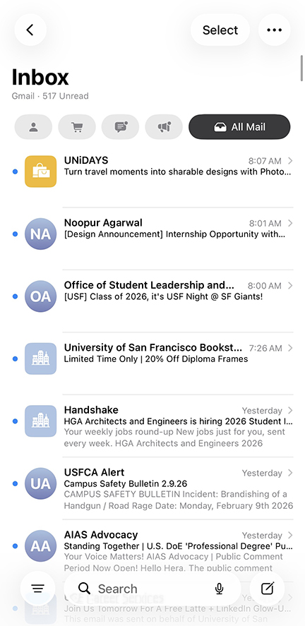
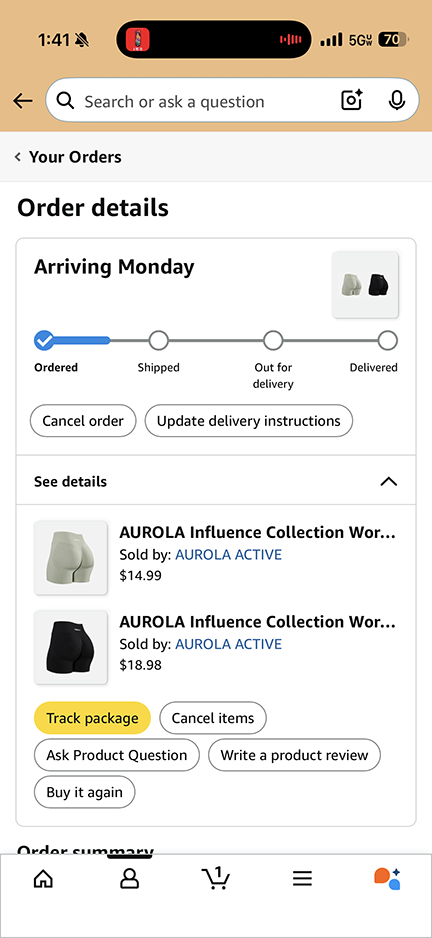
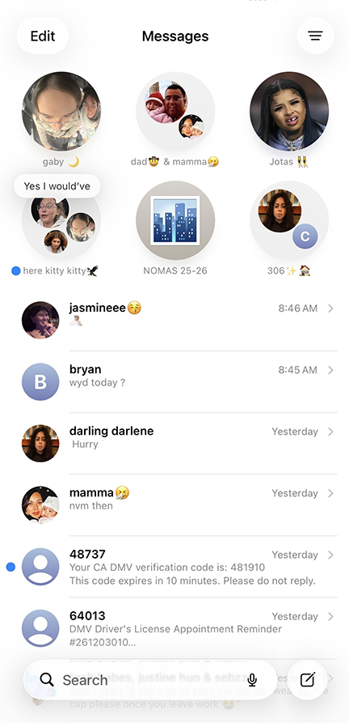
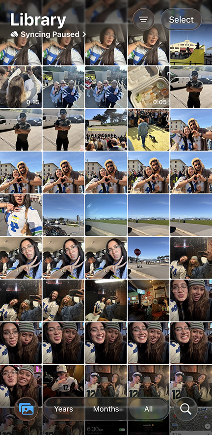

From Tuesday through Thursday of everyweek, I wake up to my 6:30am alarm to start my morning off very early. I like to have time to fix me my protein shake and get ready with no rush before I start my day at school!

Hello! Here you will see a glimpse of my world and it's taken time and patience to create this peaceful reality of mine. Look through and you'll see about 70% of my routine through the week; it may not be much but every week comes with different suprises. Enjoy :p
From Tuesday through Thursday of everyweek, I wake up to my 6:30am alarm to start my morning off very early. I like to have time to fix me my protein shake and get ready with no rush before I start my day at school!

To really start my day and wake myself up in a good mood, I like to play my Spanish slow music. I love singing and moving my body early in the morning because I feel like it's a good way to refresh the mind and body in a positive day before you interact with anyone.
Once I've gotten completly ready, no matter how many times I've gone to campus from my apartment on the same bus I always look at what time the bus arrives through google maps. This also lets me confirm that I can walk peacefully or not knowing I am on time to catch the bus. I HATTEEE rushing my mornings because it's the start of my mood and I want to feel that I have control of how my day can go.

Due to the bus ride from my apartment to school being around 10 minutes, I like to play a quick game of soduko as a way to mentally wake my brain up. I always do my daily challenge and the level of difficulty varies on the day, which can be annoying because on some mornings I try to finish the entire round but end up finishing my game at the end of the day. My mom showed me this game at a young age and it has stuck with me as a way to relieve stress instead of scrolling on social media.
After I have finished all my class of the day, I like to go to the gym for about an hour or so to workout. I've worked out 5 times a week for the past year so keeping my progress is very important to me. So, once I finish my workout I check what time the bus would arrive to Koret so it can take me on my way home!

Arriving back to my apartment, I play my OTHER spanish playlist to keep my up and going throughout the rest of my day. I try my best to always listen to spanish music everyday because I have a fear of loosing my spanish even though im fluent lol. It's only because I am very used to speaking spanish everyday back home and living in SF I don't speak to anyone in spanish except only to one of my roomates sometimes through the week. However, let this playlist put you on some GOOD spanish bangers. You're welcome :)
After a while of cleaning around the apartment or doing homework, I like going to my private instagram account to see if I have enough images to gather for a post. This account is almost like my diary because each post is a summary of images from the past 2-3 weeks of my life. I've always had a second account like this since freshman year of high school but I didn't pick it back up until my spring semester of sophmore year in university. Only people who I am close with since my childhood, high school, and university are followed by this account because they are the ones who I feel are deserving to be apart of my life while I am still finding my way around it.


Once I finish my homework, I go through ALL my email inboxes to make sure if there are important emails that need to be sent. I personally use 3 different emails: school, professional, personal. The different inboxes help my catagorize what kind of emails are more important than the others, so I can better plan my days ahead. I do this every single day, even on weekends because there is always something important that needs attention or planning.
There are some days I order something from amazon, and most of the time they'll be gym shorts. I order so many gym shorts because every time I go home I end up leaving most of my shorts there by accident, so I just end up buying more. OOPS. It's almost like an addiction, the shorts I buy are so comfy and emphasize your curves SO GOOD.


Of course, through out the day I always check my imessages for texts because since I'm in many groupchats theres always messages to open. Theres usually more active texts in the late afternoon because all my friends and families are in different time zones, so it can vary through the day who will be texting me more whenever they're not busy
There are some days I end my day by going to a friends house and I end up staying there for so many hours without realizing the time. I end up ordering a waymo to take me back to my apartment at 2am. Sometimes I refuse to spend the night because either I need to wake up early the next day to go to the gym or I'd just rather sleep in my own bed with my pajamas hehe.


Depending on how active I was during the day with my friends, I like ending my day by viewing my camera roll to see how great my day was. I also do this to see if there are any images that I could possibly delete because my storage is ALWAYS full, and I hate how apple profits off of us based off how much storage we need. Like sorry apple for having am iteresting and adventurous life that you want me to pay you to keep my pinche photos.